1下學期 第 2 章
遺傳
答案卡
點題號可跳到該題詳解。開啟「遮住答案」後，點一下塗卡格才會顯示答案。
詳解
依據遺傳法則，在不考慮突變情形下，由題幹可推知：小玲的基因型可能為FF 或Ff，丈夫必為ff，子代因為都有酒窩，因此基因型必為Ff。故選(B)。
看題目
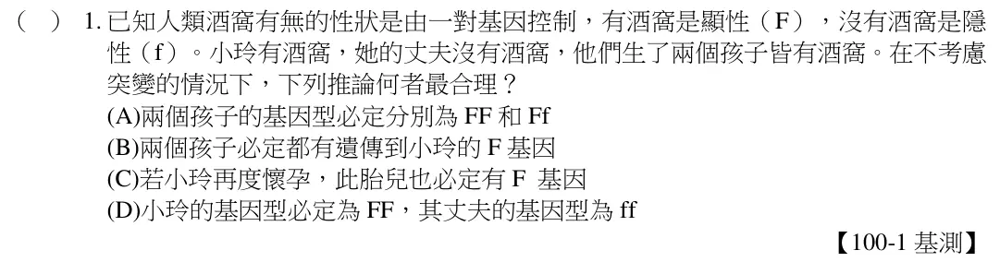
(A)蕨類植物以孢子繁殖，不會開花結果。(B)乙盆植物是甲盆行無性生殖而來，故染色體數目相同。(C)蕨類植物具有維管束。故選(D)。
看題目
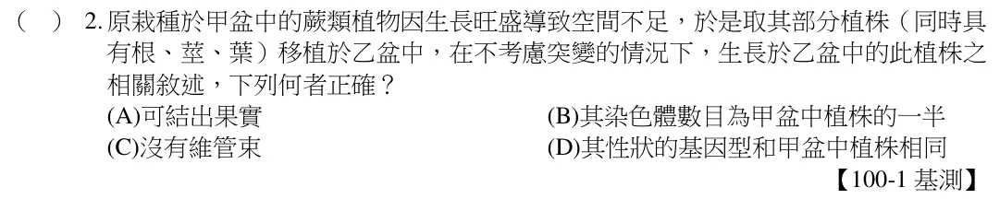
甲家庭母親基因型可能為RR 或Rr；乙家庭母親基因型為Rr；丙家庭母親基因型為RR；丁家庭母親基因型為rr。故選(B)。
看題目
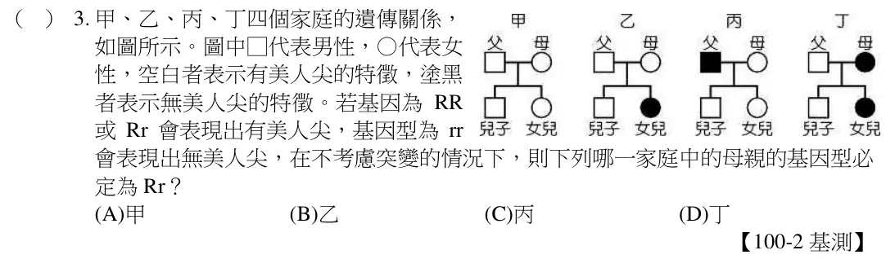
此植物不管是經由有性生殖或無性生殖而產生的子代，在不考慮突變情況下皆有控制花朵顏色的基因。故選(D)。
看題目
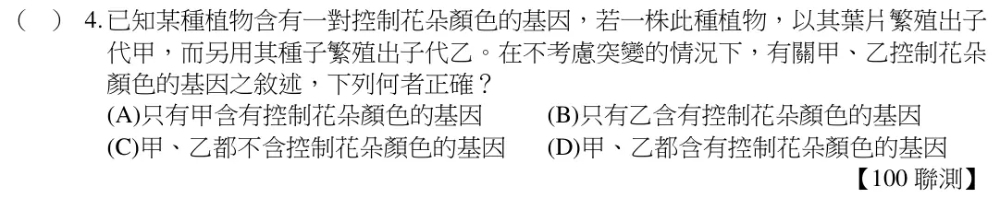
從子代性狀中可看出親代基因型及顯隱性。(A)甲組子代比3：1，代表短毛為顯性Aa，長毛為隱性aa。(B)乙組子代皆隱性，親代皆為aa。(C)丙組子代比1：1，親代長毛aa，短毛Aa。(D)丁組子代皆顯性，短毛AA，長毛aa。故選(D)。
看題目
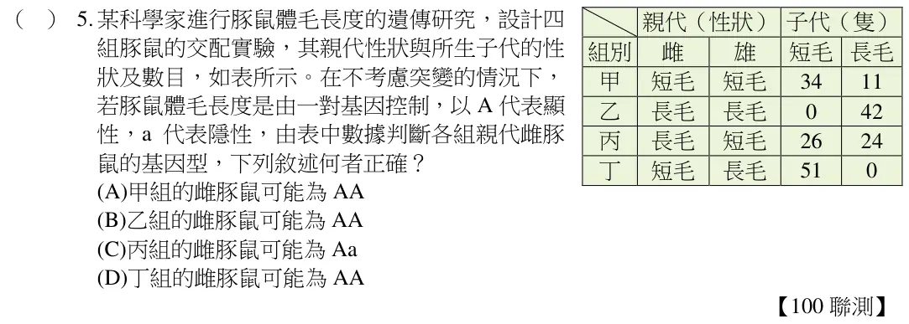
看題組文章
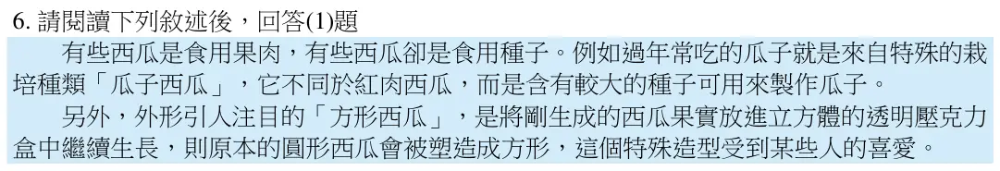
由於方形西瓜是以人為外力的方法，將圓形西瓜放進立方體的透明壓克力盒中生長而成，但遺傳基因仍為控制圓形的西瓜，因此在自然環境下生長時，應仍長出圓形西瓜。故選(B)。
看題目
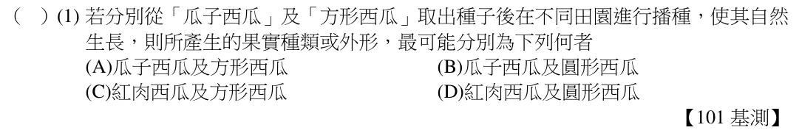
由於甲、乙的子代中隱性性狀約為1/2，表示甲、乙子代的基因型有一半為Rr，另一半為rr，又甲的基因型為Rr，因此精細胞中所含控制花朵顏色的遺傳因子最可能為r。故選(B)。
看題目
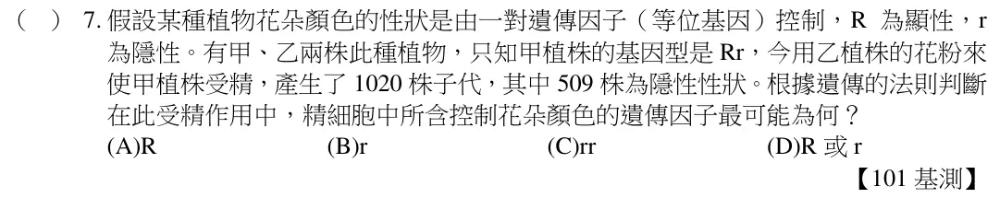
經由表可得知父親與母親可生下帶有顯性與隱性的子女，表示父親基因型中的等位基因分別為顯性和隱性，且阿泰、弟弟與妹妹基因型也可從父母方得知。但表中僅有祖父的性狀，卻無祖母的性狀，所以無法得知祖父的基因型。故選(A)。
看題目
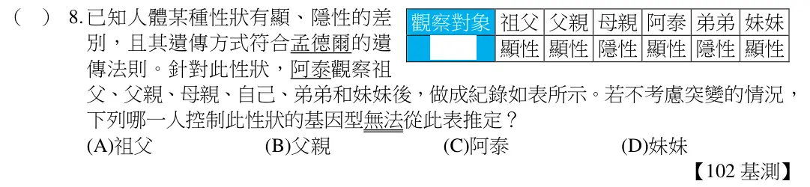
王先生女兒的體細胞會帶有來自父親及母親各1 個X 染色體，兒子的體細胞會帶有來自父親的1 個Y 染色體及母親的1 個X 染色體，經減數分裂後，兒子所產生的精細胞可能帶有原本來自父親的Y 染色體或是原本來自母親的X 染色體，女兒的卵細胞可能帶有原本來自父親的X 染色體或是原本來自母親的X 染色體。因此，本題中只有女兒的肌肉細胞必定含有來自王先生的X 染色體，會帶有此X 染色體上的隱性等位基因。故選(D)。
看題目
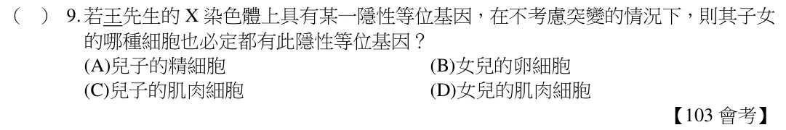
由於親代水稻甲和乙皆不具此特殊香味，但子代水稻丙不具此特殊香味，子代水稻丁具有此特殊香味，可知不具有此特殊香味的等位基因為顯性，具有此特殊香味的等位基因為隱性。若以(A)表示此顯性等位基因，a 表示此隱性等位基因，則水稻甲、乙皆為Aa，水稻丙可能為AA 或Aa，水稻丁為aa。故選(C)。
看題目
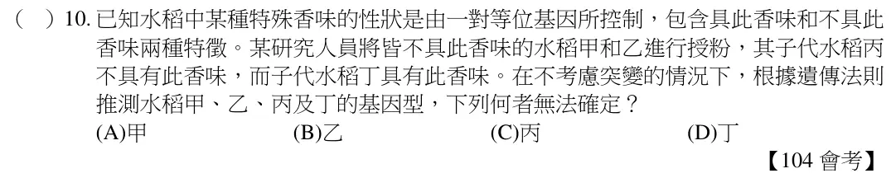
由題目敘述：兩人將來所生的女兒必帶有此隱性等位基因，但兒子必無，可推知此隱性等位基因必定位於夫的X 染色體上，但妻的兩個X 染色體上都沒有此隱性等位基因。由於妻的其中一個X 染色體來自其父親，且此染色體並無此隱性等位基因，推論妻的父親所擁有的X 染色體也不具有此隱性等位基因。由於妻的父親其另一染色體為Y，Y 染色體也沒有此隱性等位基因，因此妻的父親必不具有此一隱性等位基因。故選(C)。
看題目
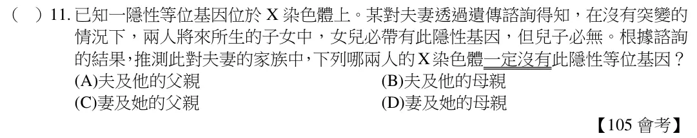
假設控制黃色的等位基因為A，控制綠色的等位基因為a，表現型黃色的基因組合可能為AA 或Aa，表現型綠色的基因組合則為aa。分析：甲若親代為Aa×Aa，子代有aa 的可能，表現型為綠色；乙的親代只有aa×aa 的可能，子代也只能為aa，表現型為綠色；丙的親代若為Aa×aa，子代有aa 的可能，表現型為綠色；丁的親代若為aa×Aa，子代有Aa 的可能，表現型為黃色。綜合上述分析，只有乙不
合理。故選(B)。
看題目
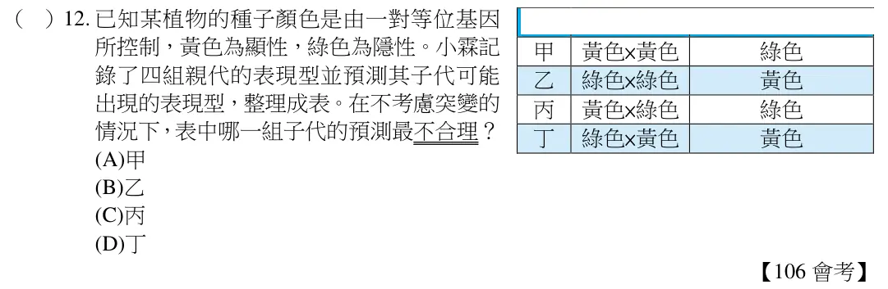
番薯利用營養器官繁殖屬無性生殖，母株和其發芽所產生的子株之基因型完全相同。故選(B)。
看題目
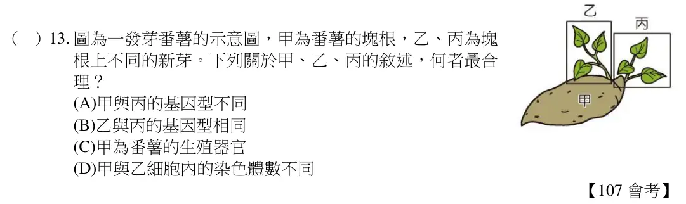
圖之甲細胞應為此雌性動物的體細胞，有4 對共8 條染色體；乙細胞為此雌性動物的卵細胞，有4 條不成對的染色體。1 條染色體上不止1 個基因，體細胞有1 對性染色體，卵細胞只有1 條性染色體。故選(C)。
看題目
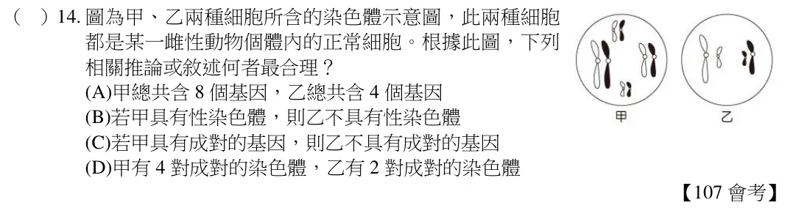
親代為Aa×Aa 時，子代的基因型為AA：Aa：aa＝1：2：1，其中AA 和Aa 皆表現顯性性狀，aa 表現隱性性狀。故選(B)。
看題目
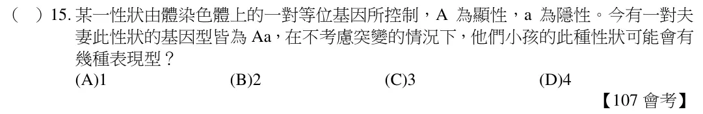
表中甲組所生子代昆蟲全為淺色；乙組所生子代昆蟲有1/2 為深色，1/2 為淺色；丙組所生子代昆蟲有3/4 為深色，1/4 為淺色；丁組所生後代子蟲全為深色。因此當天敵易捕食深色昆蟲時，丁組所繁殖的子代被捕食之數量可能會最多。故選(D)。
看題目
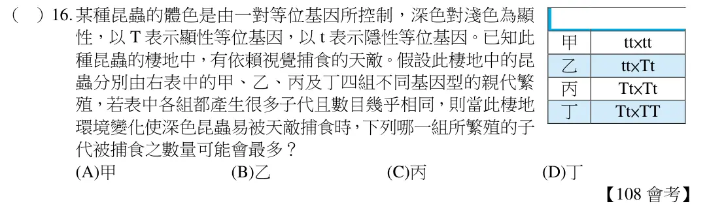
由於小鼠性別決定機制與人類相同，故雄性具XY 性染色體，雌性具XX 性染色體。
(A)經轉殖人類感光色素基因的受精卵所發育成的小鼠，仍屬有性生殖所產生的子代；
(B)雄性小鼠所產生的精子1/2 帶有X 染色體，1/2 帶有Y 染色體；故只有1/2 的精子具有人類的感光色素基因；(C)不論雌、雄小鼠，體細胞中皆有X 染色體，因此皆具有人類感光色素基因；(D)這些小鼠若互相繁殖出下一代，新個體的體細胞皆會帶有X染色體，即皆具有人類感光色素基因，可分辨紅綠色。故選(C)。
看題目
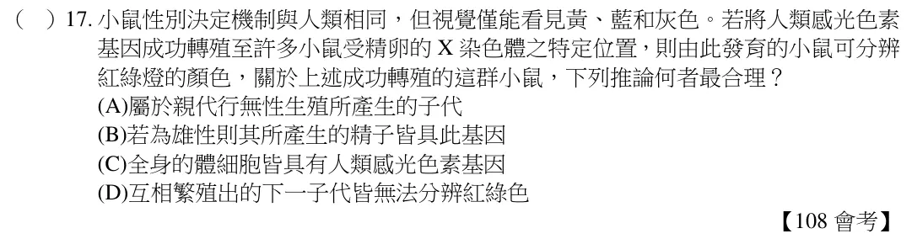
看題組文章
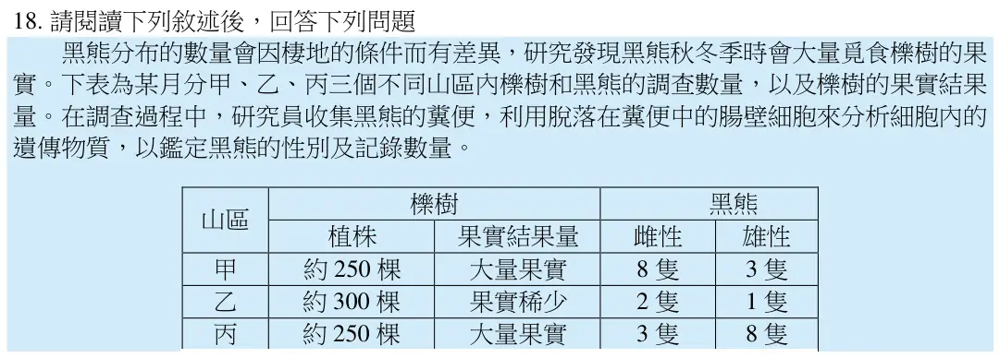
黑熊性別決定機制若與人類相同，表示雄性黑熊體細胞具有XY 性染色體，雌性黑熊體細胞具有XX 性染色體。故選(B)。
看題目
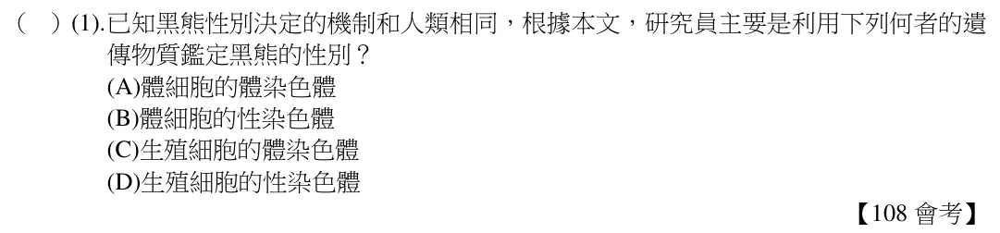
1.由題目所述孩子、父母、祖父母皆能捲舌，但父親的兄弟姊妹皆不能捲舌，可見控制捲舌的基因應為顯性等位基因。2.若此控制捲舌的等位基因以R 表示，不能捲舌的等位基因以r 表示，則祖父母的基因型皆為Rr，父親的基因型為RR 或Rr，孩子的基因型為RR 或Rr。(孩子母親的基因型在敘述中無法確定)。故選(C)。
看題目
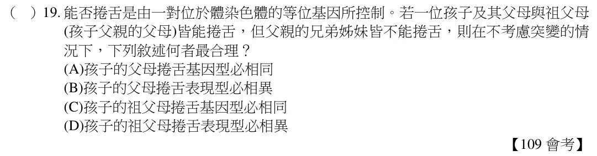
由於深色為顯性（B），淺色為隱性（b），故深色蛾的基因型可能為BB 或Bb，淺色蛾的基因型為bb。由圖（八）可知甲：BB＋Bb＜bb，乙：BB＋Bb＝bb，丙：BB＋Bb＝bb，丁：BB＋Bb＞bb。故選(B)。
看題目
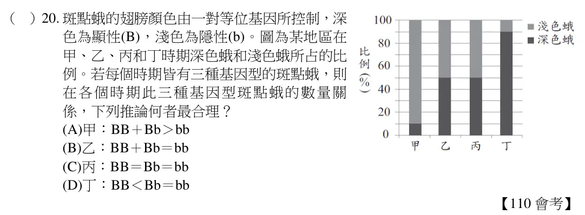
由於O 型的基因型為ii，故父母親皆必須帶有至少1 個i。在甲乙丙丁4 組父母組合中，只有丙組合中的母親其基因型為IAIB，無i 的遺傳因子，因此組別丙所生育的子女不可能為O 型血型。故選(C)。
看題目
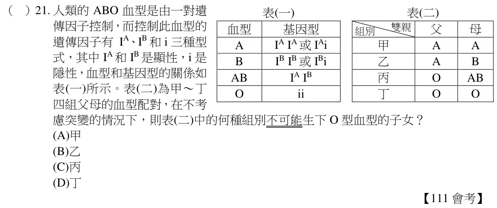
由題意可推知軟骨發育不全症為顯性遺傳疾病，只要有1 個FGFR3 基因即會表現出此遺傳疾病的特徵。由於阿佑的父母皆未患病，阿佑則是因發生突變而患有軟骨發育不全症，故其父母的基因型應皆為ff。故選【D】。
看題目
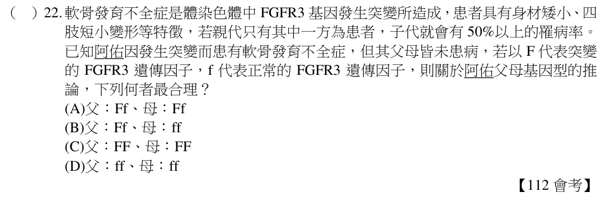
長翅基因為顯性基因，短翅基因為隱性基因，如果是Aa x Aa，則表現型應為AA(長)、Aa(長)、Aa(長)、aa(短)，其中長翅占3/4，短翅占1/4，長翅與短翅的比例應約為3：1。故選【D】。
看題目
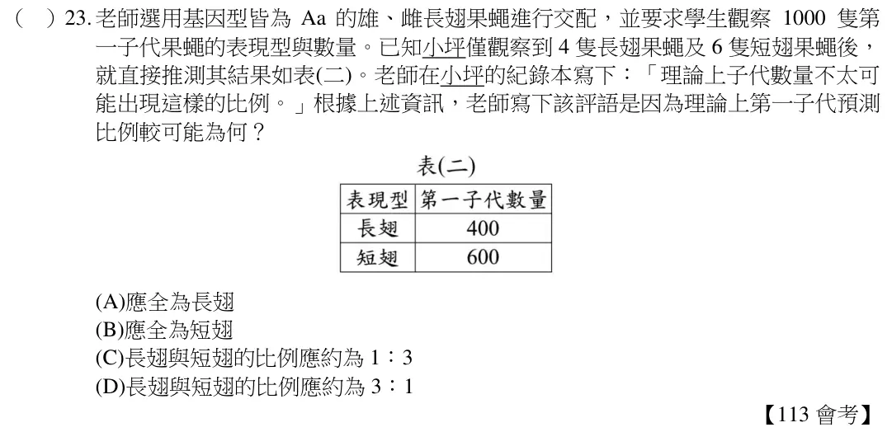
題幹敘述甲、乙兩隻黑眼睛孔雀魚交配，所生下的眾多子代有黑眼睛及紅眼睛兩種，故可推測得知黑眼睛應為顯性遺傳，紅眼睛則為隱性遺傳，且兩親代甲和乙的黑眼睛基因應該為Aa，子代的丙和丁雖然也是黑眼睛，但有可能是AA 或Aa，無法確定。故選【A】
看題目
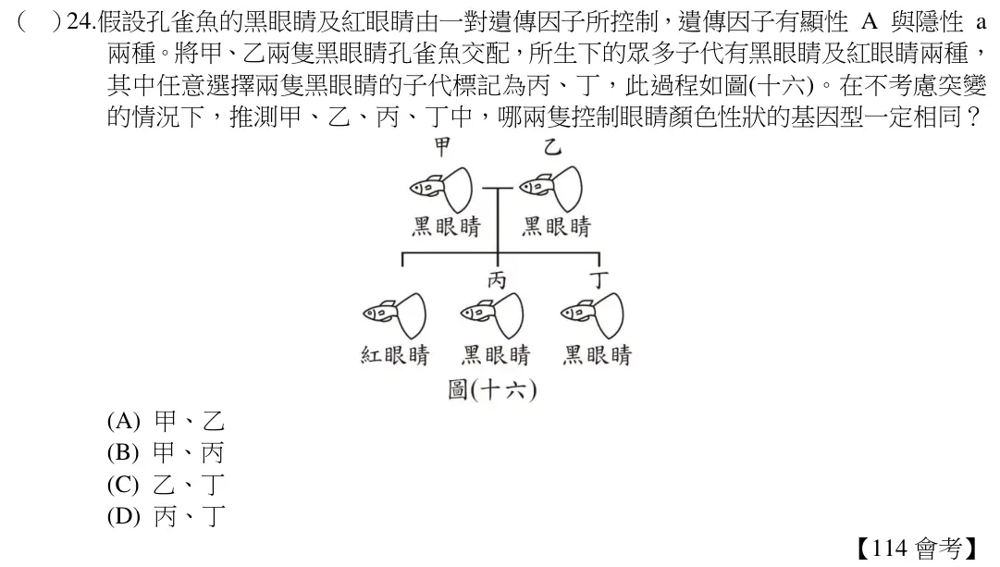